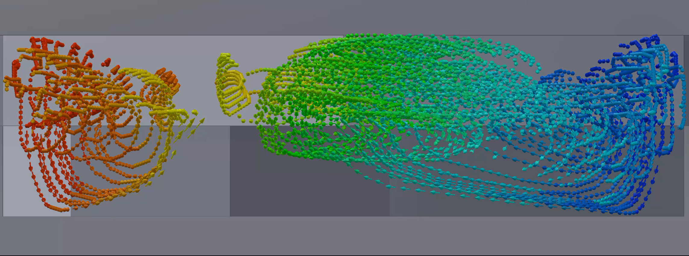
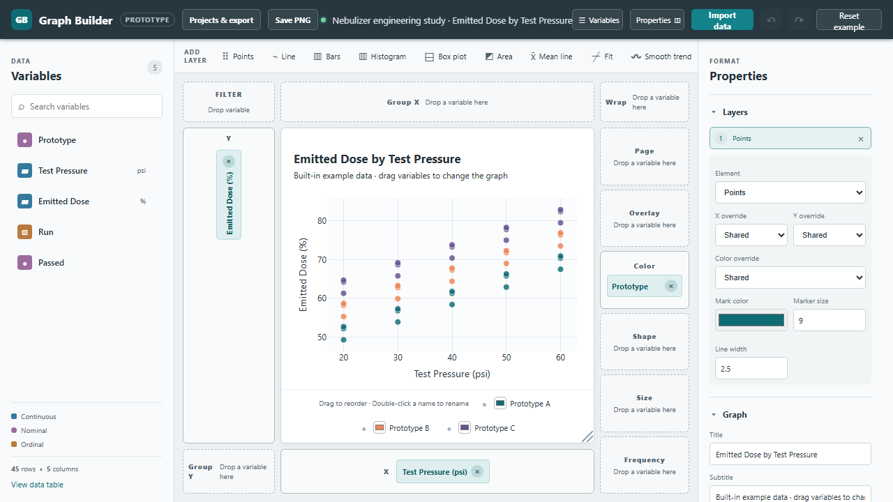

Biomedical engineering · Medical device R&D
Building the tools behind better care.
I turn CT data, fluid dynamics, and benchtop experiments into practical tools for medical device research.
See selected work
Biomedical Engineer | Medical Device R&D
timothy.a.lasater@gmail.com | (949) 291-3592 | LinkedIn
Download ResumeBiomedical engineering · Medical device R&D
I turn CT data, fluid dynamics, and benchtop experiments into practical tools for medical device research.
See selected work

I design and test medical devices for drug delivery, diagnostics, and microfluidics. I am a Biomedical Engineering graduate from UC Irvine, with a specialization in Micro/Nano-scale Engineering. My work bridges the gap between mechanical design and patient outcomes, with a strong focus on rapid prototyping, fluid dynamics, and drug delivery.
At Scientific Horizons Consulting, I prototype drug-delivery devices and build benchtop tests to guide design decisions.
Explore projectsSelected work
Measuring where aerosols deposit in individual sinuses.
See project
Channel design that improved lab mixing performance by over 33%.
See project
One apparatus for studying two drug-delivery processes.
See project
A browser tool for exploring and presenting scientific data.
See projectJune 2026
Bachelor of Science, Biomedical Engineering
Specialization in Micro/Nano-scale Engineering | GPA: 3.986
I am always open to exploring new opportunities.
Get In Touch